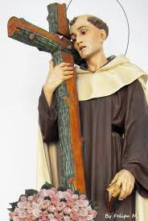
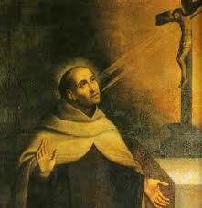
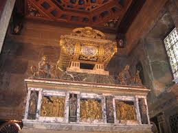
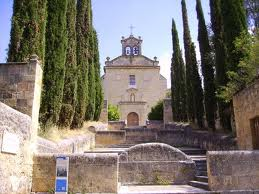
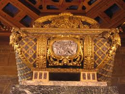
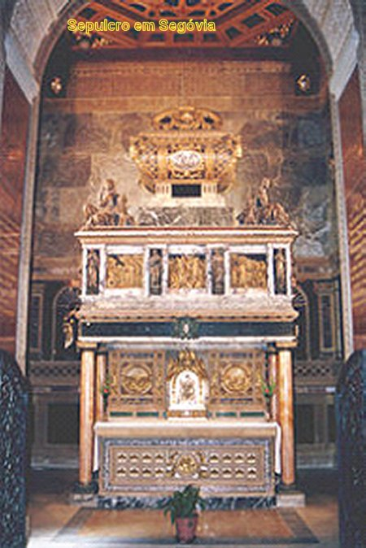
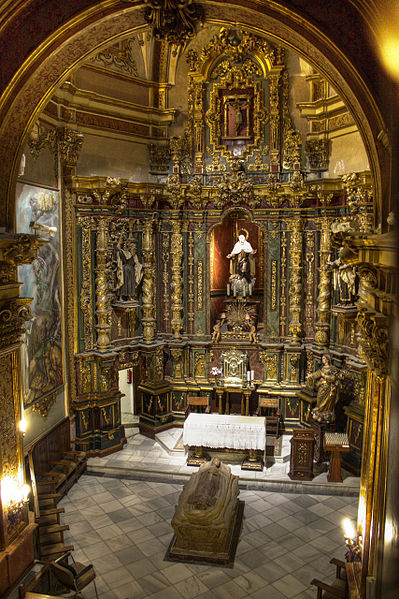

O PODER DA GRAÇA DIVINA
DEPOIS DO CÁRCERE
Dirigiu-se em direção ao
sul, até a Andaluzia, longe de seus inimigos, mas também distante de
seus amigos. Sentiu-se estranho entre os religiosos, porque não era
conhecido 
O seu primeiro destino foi “O Calvário” (Jaén), um Convento solitário entre Ubeda e Beas. Está situado no vale onde nasce o Rio Guadalquivir. Lá, João permaneceu sempre ocupado com a oração ou trabalhos manuais. Gozando a liberdade, revivia o cárcere transfigurado e escreveu o poema da “Noite Escura”. Mesmo sendo o Superior do Convento, sobrou-lhe tempo para dar assistência as Carmelitas de Beas, de confessar-lhes e dar-lhes toda a ajuda espiritual.
Realizou pessoalmente a “Fundação de Religiosos” em Baeza, que foi inaugurada na Festa da Santíssima Trindade do ano 1579, e tornou-se o Superior da mesma. Floresceu na cidade os estudos universitários e os movimentos espirituais. Os Carmelitas fundaram um Colégio de Teologia e sendo Frei João o Reitor, ele se encarregava de tudo: da direção da Comunidade, formação dos estudantes, confissões na Igreja pela manhã e a tarde, direção espiritual das Monjas e outros. Quando sobrava algum tempo, ia para o Hospital dar assistência aos enfermos. Finalmente em 1580 o Carmelo Descalço voltou a assumir as suas funções na Província e no ano de 1588 foi reconhecido como Ordem Religiosa.
Granada é a última e mais longa permanência do Santo em Andaluzia. Chegou à cidade em Janeiro de 1582, como Prior do Convento dos Mártires. Construiu um aqueduto para conduzir a água até a horta do Convento e empreendeu a construção de um claustro quadrado, em arcada, que provocou a admiração de todos. Depois como Provincial, durante dois anos fez diversas viagens a Sevilha, Caravaca, Beas, Madri, Málaga e Córdoba, dando assistência e impulsionando a Ordem Carmelita. Também foi a Lisboa para uma Assembléia Capitular. Dá assistência espiritual e material as Carmelitas Descalças de Granada, a quem ele mesmo acompanhou e ajudou na fundação do Convento. Comunicava-se com frequência com Madre Ana de Jesus e a Senhora Ana de Peñalosa, as quais, respectivamente, ele dedicou os comentários do “Cântico” e de “A Chama”.
Entre as tarefas de administração, construção, direção espiritual e viagens, ainda lhe sobravam tempo para redigir seus livros. Granada é seu escritório e onde realizou o momento culminante de sua criação literária. Ali redige totalmente ou concluiu a redação de suas quatro grandes obras: “Subida do Monte Carmelo”, “Noite Escura”, “Cântico Espiritual” e “Chama de Amor Viva”. Com a idade de 40 a 44 anos, está na plenitude da sua disposição e inspiração, trabalhando com toda força e dedicação.
SEGÓVIA

E assim, o triênio de 1588 a 1591, representa em seu conjunto, um período de maior maturidade psicológica e espiritual na vida do místico. Observa-se logo de início a mudança de ritmo das suas atividades: parou de viajar e de escrever. Nos três anos não visitou freis e nem monjas dos Conventos que conhecia: em Ávila, Medina, Alba e outros. O traço peculiar observado em Segóvia é uma síntese harmônica, ou seja, uma vida ativa e contemplativa, de convívio e solidão, de mística e trabalho manual, de colaboração e conflito. A maturidade pode ser observada num breve resumo de suas atividades:
1 – Primeiro definidor do Governo Geral Carmelita e Vigário da Ordem, na ausência do titular Padre Dória;
2 – Superior da Casa, e responsável pelas obras de ampliação do Convento e reconstrução da Igreja;
3 – Trabalhos manual intenso na obra, na pedreira e na horta do Convento;
4 – Direção espiritual das Carmelitas e de numerosas pessoas da cidade;
5 – Longas horas de contemplação silenciosa nos degraus do Altar diante do Santíssimo, na janelinha da cela, durante as noites, e na gruta do penhasco da horta.
Frei João da Cruz revelou sempre ser um contemplativo. Qualquer que fosse as suas atividades, reservava longos períodos para a solidão e a contemplação.
No Governo Geral da Ordem, passou por muitas dores de cabeça, especialmente durante o último ano (1591), quando se opôs firmemente aos atos e decisões do Padre Dória, em assuntos de elevada gravidade. Esta realidade causou, evidentemente, diversos atritos e desentendimentos que muito lhe aborreceram.
SUA VIDA ESTÁ SE APAGANDO
As tensões no Governo Geral pressagiaram novos rumos na Vida de Frei João. Em
Junho de 1591, realizou-se o Capítulo Geral, em Madri. Ele se mostrou um 
Assim, terminado o Capítulo ele se retirou para o deserto, onde está o Mosteiro de Jaén, enquanto aguardava a nomeação para outra missão. É nomeado Provincial do México, para onde devia viajar com um grupo de 12 religiosos.
Entretanto, um pequeno mal-estar provocou a transferência de sua ida para o México. No dia 22 de Setembro de 1591, de Jaén viajou para o Mosteiro de Ubeda, para se tratar de uma febre constante, que estava lhe causando um sério incomodo há oito dias. A Comunidade de Baeza insistiu para que ele fosse a Baeza e não Ubeda, para se tratar no meio das pessoas que o amavam. Mas ele não quis, preferiu Ubeda, embora o Prior do Mosteiro fosse aquele Padre rancoroso do Capitulo em Madri, Padre Diego Evangelista, que havia lhe atacado com calúnias e difamações.
E assim, desde o primeiro dia, o Prior Diego o obrigou a assistir todos os atos da Comunidade, mesmo estando com febre altíssima e arrastando de uma perna, por conta de uma infecção. E nas oportunidades, Padre Diego lançava-lhe no rosto as despesas, que ele Frei João lhe estava dando! Proibiu que ele recebesse visitas e que ganhasse presentes, e muitas outras coisas.
Agrava-se a doença de João. A febre permanecia alta e uma profunda ferida aberta em sua perna direita, não é curada e apresenta várias erupções. Tiveram que serrar os seus ossos a frio, sem anestesia. As chagas se estendem pelas costas, não se pode tocá-lo. Ele passava o tempo rezando, em silêncio, ou em algumas ocasiões, conversava com H. Bernardo o seu enfermeiro, que se revelou seu amigo.
Dois dias antes de morrer, mandou chamar o Prior Diego e carinhosamente pediu-lhe perdão pelos incômodos e pelas despesas, e também lhe pediu, que por caridade, ele lhe concedesse o hábito que usava, para ser enterrado com ele. O Prior compreendeu tudo e chorou emocionado... Renascia naquele momento o afeto e a comunhão entre aquelas duas almas. A doçura que João sempre buscou no Amor de DEUS, derramava-se ali torrencialmente e inundou a alma do Prior. Já em agonia, João manifestou o desejo de que não lessem perto dele, outra coisa senão palavras de amor e de vida. E pediu: Leiam-me o “Cântico dos Cânticos da Sagrada Escritura”, completou Frei João: “Que pérolas preciosas eles são”!
Já passavam da meia-noite, do dia 13 para o dia 14 de Dezembro de 1591, quando se ouviu o sino das Matinas soar e ele disse as suas últimas palavras: “Gloria a DEUS, irei cantá-las no Céu”. E fechou os olhos.
Depois de sua morte, seu corpo foi sepultado e se iniciaram as disputas entre Úbeda e Segovia, pela posse de seus restos mortais. Em 1593, estes restos, mutilados, foram transladados clandestinamente a Segovia, donde repousam atualmente. O processo de Beatificação e de Canonização se iniciou em 1627 e finalizou em 1630. Foi Beatificado em 1675, pelo Papa Clemente X e foi Canonizado em 1726, pelo Papa Benedito XIII. Posteriormente, no dia 24 de Agosto de 1926, o Papa Pio XI o proclamou Doutor da Igreja Universal.


Igreja Carmelita de Segóvia Tumulo em Segóvia


Sepulcro de São João da Cruz em SEGÓVIA e EM ÚBEDA